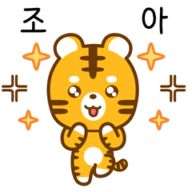
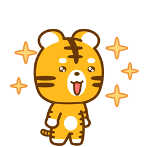
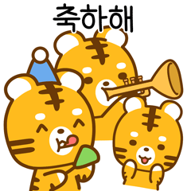
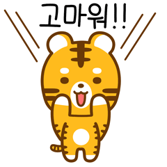
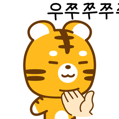
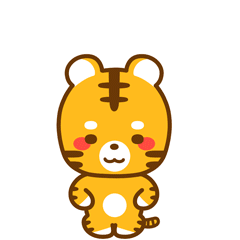

맞춤 창업 아이템 추천
배재대 추천 프로그램
실제 창업 도전을 시작해보고 싶다면?
배재대 창업팀 사례 보러가기 →💡
이 결과는 창업 방향을 탐색하는 참고 도구예요. 절대적인 기준이 아니며, 다양한 창업 아이템 중 하나로 생각해주세요 😊
유형 테스트 → 맞춤 아이템 추천까지, 2단계로 알아보세요.

학과·학년 정보는 창업 성향 분석에만 활용되며
결과에는 전혀 영향을 주지 않아요.
원하는 테스트를 선택하세요
입문은 4가지 유형, 심화는 8가지 세부 유형으로 분석해요
20문항으로 나의 창업 유형(A/B/C/D)을 빠르게 파악해요.

관심사·전공 계열 기반으로 맞춤 창업 아이템을 추천받아요.

40문항 정밀 분석으로 8가지 세부 유형 중 나와 꼭 맞는 유형을 찾아요.
40문항 · 10분
40문항 심층 분석으로 나만의 창업 아이템 TOP 3를 정밀 추천해요.
40문항 · 10분이 결과는 창업 방향을 탐색하는 참고 도구예요. 절대적인 기준이 아니며, 같은 유형이어도 개인마다 다른 창업을 할 수 있어요. 결과보다 나를 이해하는 과정이 더 중요해요 😊

실제 창업 도전을 시작해보고 싶다면?
배재대 창업팀 사례 보러가기 →이 결과는 창업 방향을 탐색하는 참고 도구예요. 절대적인 기준이 아니며, 다양한 창업 아이템 중 하나로 생각해주세요 😊

이 결과는 창업 방향을 탐색하는 참고 도구예요. 절대적인 기준이 아니며, 같은 유형이어도 개인마다 다른 창업을 할 수 있어요. 결과보다 나를 이해하는 과정이 더 중요해요 😊
실제 창업 도전을 시작해보고 싶다면?
배재대 창업팀 사례 보러가기 →이 결과는 창업 방향을 탐색하는 참고 도구예요. 절대적인 기준이 아니며, 다양한 창업 아이템 중 하나로 생각해주세요 😊